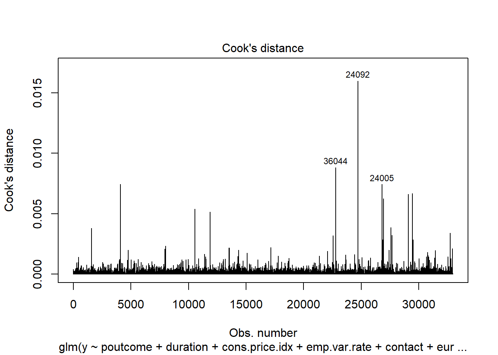
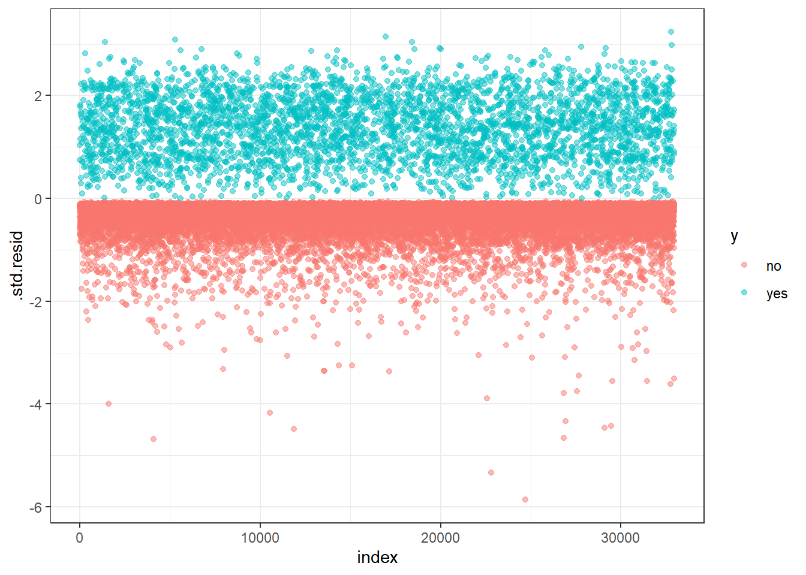

Bank Deposit Predictions Using Logistic Regression
Steven Mann
12/6/2020
#Read in the data
##We know that this data is already clean
Bank = read.csv(file.choose(),header = TRUE, sep = ";",stringsAsFactors = TRUE)
#Load Libraries
library(ggplot2)
library(tidyverse)
library(vcd)## Warning: package 'vcd' was built under R version 4.0.3## Loading required package: gridlibrary(GGally)## Registered S3 method overwritten by 'GGally':
## method from
## +.gg ggplot2##
## Attaching package: 'GGally'## The following object is masked from 'package:dplyr':
##
## nasalibrary(epitools)## Warning: package 'epitools' was built under R version 4.0.3##
## Attaching package: 'epitools'## The following object is masked from 'package:vcd':
##
## oddsratiolibrary(MASS)##
## Attaching package: 'MASS'## The following object is masked from 'package:dplyr':
##
## selectlibrary(car)## Loading required package: carData## Registered S3 methods overwritten by 'car':
## method from
## influence.merMod lme4
## cooks.distance.influence.merMod lme4
## dfbeta.influence.merMod lme4
## dfbetas.influence.merMod lme4##
## Attaching package: 'car'## The following object is masked from 'package:dplyr':
##
## recode## The following object is masked from 'package:purrr':
##
## somelibrary(glmnet)## Warning: package 'glmnet' was built under R version 4.0.2## Loading required package: Matrix##
## Attaching package: 'Matrix'## The following objects are masked from 'package:tidyr':
##
## expand, pack, unpack## Loaded glmnet 4.0-2library(ROCR)## Warning: package 'ROCR' was built under R version 4.0.3library(regclass)## Warning: package 'regclass' was built under R version 4.0.3## Loading required package: bestglm## Warning: package 'bestglm' was built under R version 4.0.3## Loading required package: VGAM## Loading required package: stats4## Loading required package: splines##
## Attaching package: 'VGAM'## The following object is masked from 'package:car':
##
## logit## The following object is masked from 'package:caret':
##
## predictors## The following object is masked from 'package:tidyr':
##
## fill## Loading required package: rpart## Loading required package: randomForest## Warning: package 'randomForest' was built under R version 4.0.2## randomForest 4.6-14## Type rfNews() to see new features/changes/bug fixes.##
## Attaching package: 'randomForest'## The following object is masked from 'package:dplyr':
##
## combine## The following object is masked from 'package:ggplot2':
##
## margin## Important regclass change from 1.3:
## All functions that had a . in the name now have an _
## all.correlations -> all_correlations, cor.demo -> cor_demo, etc.##
## Attaching package: 'regclass'## The following object is masked from 'package:vcd':
##
## mosaic## The following object is masked from 'package:lattice':
##
## qqlibrary(ResourceSelection)## Warning: package 'ResourceSelection' was built under R version 4.0.3## ResourceSelection 0.3-5 2019-07-22library(varhandle)## Warning: package 'varhandle' was built under R version 4.0.3library(broom)
library(pROC)## Warning: package 'pROC' was built under R version 4.0.3## Type 'citation("pROC")' for a citation.##
## Attaching package: 'pROC'## The following object is masked from 'package:Metrics':
##
## auc## The following objects are masked from 'package:stats':
##
## cov, smooth, varset.seed(1234)
index<-sample(1:41188,32950,replace=FALSE)
test<-Bank[-index,]
train<-Bank[index,]full.log<-glm(y~.,family="binomial",data=train)
step.log<-full.log %>% stepAIC(trace=FALSE)
summary(step.log)##
## Call:
## glm(formula = y ~ job + default + contact + month + day_of_week +
## duration + campaign + pdays + poutcome + emp.var.rate + cons.price.idx +
## cons.conf.idx + euribor3m, family = "binomial", data = train)
##
## Deviance Residuals:
## Min 1Q Median 3Q Max
## -5.9927 -0.2960 -0.1864 -0.1367 3.2950
##
## Coefficients:
## Estimate Std. Error z value Pr(>|z|)
## (Intercept) -1.783e+02 1.159e+01 -15.376 < 2e-16 ***
## jobblue-collar -3.122e-01 7.360e-02 -4.242 2.22e-05 ***
## jobentrepreneur -1.231e-01 1.351e-01 -0.912 0.361952
## jobhousemaid -1.684e-03 1.568e-01 -0.011 0.991431
## jobmanagement -2.885e-02 9.253e-02 -0.312 0.755188
## jobretired 2.408e-01 9.285e-02 2.593 0.009511 **
## jobself-employed -2.008e-01 1.334e-01 -1.505 0.132256
## jobservices -2.070e-01 9.178e-02 -2.256 0.024091 *
## jobstudent 2.214e-01 1.123e-01 1.971 0.048724 *
## jobtechnician -2.910e-02 7.143e-02 -0.407 0.683705
## jobunemployed -1.077e-01 1.451e-01 -0.742 0.457859
## jobunknown 1.444e-02 2.593e-01 0.056 0.955587
## defaultunknown -2.853e-01 7.399e-02 -3.856 0.000115 ***
## defaultyes -7.409e+00 1.388e+02 -0.053 0.957431
## contacttelephone -6.218e-01 8.268e-02 -7.521 5.42e-14 ***
## monthaug 8.050e-01 1.200e-01 6.709 1.97e-11 ***
## monthdec 3.033e-01 2.227e-01 1.362 0.173337
## monthjul 9.238e-02 1.072e-01 0.862 0.388823
## monthjun -4.246e-01 1.188e-01 -3.576 0.000349 ***
## monthmar 1.931e+00 1.296e-01 14.897 < 2e-16 ***
## monthmay -5.353e-01 8.516e-02 -6.286 3.26e-10 ***
## monthnov -5.012e-01 1.196e-01 -4.190 2.79e-05 ***
## monthoct -6.109e-02 1.390e-01 -0.440 0.660188
## monthsep 1.116e-01 1.468e-01 0.760 0.447431
## day_of_weekmon -1.189e-01 7.360e-02 -1.615 0.106337
## day_of_weekthu 4.744e-02 7.156e-02 0.663 0.507360
## day_of_weektue 1.143e-01 7.302e-02 1.566 0.117460
## day_of_weekwed 1.285e-01 7.348e-02 1.749 0.080224 .
## duration 4.682e-03 8.293e-05 56.455 < 2e-16 ***
## campaign -3.264e-02 1.293e-02 -2.525 0.011584 *
## pdays -6.390e-04 2.296e-04 -2.783 0.005391 **
## poutcomenonexistent 4.462e-01 7.033e-02 6.344 2.24e-10 ***
## poutcomesuccess 1.239e+00 2.306e-01 5.372 7.79e-08 ***
## emp.var.rate -1.663e+00 1.271e-01 -13.086 < 2e-16 ***
## cons.price.idx 1.853e+00 1.202e-01 15.414 < 2e-16 ***
## cons.conf.idx 1.202e-02 6.092e-03 1.973 0.048508 *
## euribor3m 5.391e-01 9.635e-02 5.596 2.20e-08 ***
## ---
## Signif. codes: 0 '***' 0.001 '**' 0.01 '*' 0.05 '.' 0.1 ' ' 1
##
## (Dispersion parameter for binomial family taken to be 1)
##
## Null deviance: 23269 on 32949 degrees of freedom
## Residual deviance: 13687 on 32913 degrees of freedom
## AIC: 13761
##
## Number of Fisher Scoring iterations: 10simple.log<-glm(y~poutcome + duration + cons.price.idx + emp.var.rate + contact + euribor3m,family="binomial",data=train)
summary(simple.log)##
## Call:
## glm(formula = y ~ poutcome + duration + cons.price.idx + emp.var.rate +
## contact + euribor3m, family = "binomial", data = train)
##
## Deviance Residuals:
## Min 1Q Median 3Q Max
## -5.8631 -0.3563 -0.1958 -0.1385 3.2370
##
## Coefficients:
## Estimate Std. Error z value Pr(>|z|)
## (Intercept) -1.484e+02 6.709e+00 -22.112 < 2e-16 ***
## poutcomenonexistent 4.287e-01 6.458e-02 6.638 3.18e-11 ***
## poutcomesuccess 2.074e+00 9.080e-02 22.836 < 2e-16 ***
## duration 4.467e-03 7.943e-05 56.244 < 2e-16 ***
## cons.price.idx 1.528e+00 7.044e-02 21.689 < 2e-16 ***
## emp.var.rate -1.375e+00 6.771e-02 -20.316 < 2e-16 ***
## contacttelephone -8.173e-01 6.735e-02 -12.135 < 2e-16 ***
## euribor3m 3.268e-01 5.197e-02 6.289 3.19e-10 ***
## ---
## Signif. codes: 0 '***' 0.001 '**' 0.01 '*' 0.05 '.' 0.1 ' ' 1
##
## (Dispersion parameter for binomial family taken to be 1)
##
## Null deviance: 23269 on 32949 degrees of freedom
## Residual deviance: 14548 on 32942 degrees of freedom
## AIC: 14564
##
## Number of Fisher Scoring iterations: 6e = 2.71828
e^simple.log$coefficients## (Intercept) poutcomenonexistent poutcomesuccess duration cons.price.idx
## 3.720771e-65 1.535269e+00 7.953191e+00 1.004477e+00 4.607627e+00
## emp.var.rate contacttelephone euribor3m
## 2.527136e-01 4.416074e-01 1.386575e+00#confint
exp(cbind("Odds ratio" = coef(simple.log), confint.default(simple.log, level = 0.95)))## Odds ratio 2.5 % 97.5 %
## (Intercept) 3.720400e-65 7.237349e-71 1.912493e-59
## poutcomenonexistent 1.535270e+00 1.352728e+00 1.742444e+00
## poutcomesuccess 7.953202e+00 6.656561e+00 9.502417e+00
## duration 1.004477e+00 1.004321e+00 1.004634e+00
## cons.price.idx 4.607632e+00 4.013484e+00 5.289737e+00
## emp.var.rate 2.527133e-01 2.213082e-01 2.885751e-01
## contacttelephone 4.416072e-01 3.869945e-01 5.039269e-01
## euribor3m 1.386575e+00 1.252305e+00 1.535241e+00fit.pred.simple<-predict(simple.log,newdata=test,type="response")cutoff<-0.12
class.simple<-factor(ifelse(fit.pred.simple>cutoff,"Yes","No"),levels=c("No","Yes"))
conf.simple<-table(class.simple,test$y)
print("Confusion matrix for Simple Model")## [1] "Confusion matrix for Simple Model"conf.simple##
## class.simple no yes
## No 6233 138
## Yes 1094 773Accuracy = (conf.simple[1,1] + conf.simple[2,2]) / (conf.simple[1,1] + conf.simple[1,2] + conf.simple[2,1] + conf.simple[2,2])
Sensitivity = conf.simple[1,1] / (conf.simple[1,1] + conf.simple[2,1])
Specificity = conf.simple[2,2] / (conf.simple[2,2] + conf.simple[1,2])
Accuracy## [1] 0.8504491Sensitivity## [1] 0.8506892Specificity## [1] 0.8485181roc(train$y, as.vector(fitted.values(simple.log)), percent=T, plot=TRUE,
grid=TRUE, legacy.axes = TRUE, reuse.auc = TRUE,
print.auc = TRUE, main = paste("Simple Logistic Regression ROC curve"))## Setting levels: control = no, case = yes## Setting direction: controls < cases
##
## Call:
## roc.default(response = train$y, predictor = as.vector(fitted.values(simple.log)), percent = T, plot = TRUE, grid = TRUE, legacy.axes = TRUE, reuse.auc = TRUE, print.auc = TRUE, main = paste("Simple Logistic Regression ROC curve"))
##
## Data: as.vector(fitted.values(simple.log)) in 29221 controls (train$y no) < 3729 cases (train$y yes).
## Area under the curve: 92.19%#Hosmer Lemeshaw
hoslem.test(simple.log$y,fitted(simple.log))##
## Hosmer and Lemeshow goodness of fit (GOF) test
##
## data: simple.log$y, fitted(simple.log)
## X-squared = 274.53, df = 8, p-value < 2.2e-16#Cook's D
plot(simple.log, which = 4, id.n = 3)
model.data <- augment(simple.log) %>%
mutate(index = 1:n())
model.data %>% top_n(3, .cooksd)## # A tibble: 3 x 16
## .rownames y poutcome duration cons.price.idx emp.var.rate contact euribor3m .fitted .se.fit .resid .hat
## <chr> <fct> <fct> <int> <dbl> <dbl> <fct> <dbl> <dbl> <dbl> <dbl> <dbl>
## 1 36044 no success 3509 92.9 -1.8 cellul~ 1.27 14.2 0.266 -5.33 4.81e-8
## 2 24092 no nonexis~ 4918 93.2 -0.1 teleph~ 4.41 17.2 0.357 -5.86 4.38e-9
## 3 24005 no nonexis~ 3253 93.8 -0.1 teleph~ 5.04 10.9 0.244 -4.66 1.13e-6
## # ... with 4 more variables: .sigma <dbl>, .cooksd <dbl>, .std.resid <dbl>, index <int>ggplot(model.data, aes(index, .std.resid)) +
geom_point(aes(color = y), alpha = .5) +
theme_bw()
model.data %>%
filter(abs(.std.resid) > 3)## # A tibble: 34 x 16
## .rownames y poutcome duration cons.price.idx emp.var.rate contact euribor3m .fitted .se.fit .resid .hat
## <chr> <fct> <fct> <int> <dbl> <dbl> <fct> <dbl> <dbl> <dbl> <dbl> <dbl>
## 1 21331 yes nonexis~ 194 93.4 1.4 cellul~ 4.96 -4.61 0.0652 3.04 4.16e-5
## 2 36511 no failure 2219 93.0 -2.9 cellul~ 1.26 7.98 0.174 -4.00 1.04e-5
## 3 24044 no nonexis~ 3284 93.8 -0.1 teleph~ 4.91 11.0 0.244 -4.68 1.02e-6
## 4 24103 yes failure 114 93.2 -0.1 teleph~ 4.29 -4.74 0.0950 3.08 7.74e-5
## 5 33453 no nonexis~ 1925 92.9 -1.8 cellul~ 1.29 5.49 0.130 -3.31 6.96e-5
## 6 4214 no nonexis~ 3078 94.0 1.1 teleph~ 4.86 8.68 0.208 -4.17 7.35e-6
## 7 38842 no success 1011 92.6 -3.4 cellul~ 0.714 4.69 0.108 -3.06 1.06e-4
## 8 28011 no nonexis~ 2870 93.1 -1.8 cellul~ 1.48 10.0 0.203 -4.48 1.78e-6
## 9 31609 no nonexis~ 1957 92.9 -1.8 cellul~ 1.33 5.64 0.132 -3.36 6.17e-5
## 10 32485 no nonexis~ 1954 92.9 -1.8 cellul~ 1.31 5.62 0.132 -3.35 6.27e-5
## # ... with 24 more rows, and 4 more variables: .sigma <dbl>, .cooksd <dbl>, .std.resid <dbl>, index <int>#VIF
vif(simple.log)## GVIF Df GVIF^(1/(2*Df))
## poutcome 1.232316 2 1.053612
## duration 1.182572 1 1.087461
## cons.price.idx 4.222286 1 2.054820
## emp.var.rate 24.972914 1 4.997291
## contact 1.496049 1 1.223131
## euribor3m 17.281778 1 4.157136BankCooks = Bank %>% slice(-c(24005,24092,36044))
set.seed(1234)
index<-sample(1:41185,30889,replace=FALSE)
Cooktest<-BankCooks[-index,]
Cooktrain<-BankCooks[index,]
#Logistic Regression with Influential Points Removed
Cook.simple.log<-glm(y~poutcome + duration + cons.price.idx + emp.var.rate +
contact + euribor3m,family="binomial",data=Cooktrain)
summary(Cook.simple.log)##
## Call:
## glm(formula = y ~ poutcome + duration + cons.price.idx + emp.var.rate +
## contact + euribor3m, family = "binomial", data = Cooktrain)
##
## Deviance Residuals:
## Min 1Q Median 3Q Max
## -4.5688 -0.3533 -0.1925 -0.1353 3.2360
##
## Coefficients:
## Estimate Std. Error z value Pr(>|z|)
## (Intercept) -1.478e+02 6.960e+00 -21.239 < 2e-16 ***
## poutcomenonexistent 4.300e-01 6.777e-02 6.345 2.22e-10 ***
## poutcomesuccess 1.990e+00 9.360e-02 21.261 < 2e-16 ***
## duration 4.619e-03 8.404e-05 54.964 < 2e-16 ***
## cons.price.idx 1.521e+00 7.307e-02 20.813 < 2e-16 ***
## emp.var.rate -1.400e+00 7.025e-02 -19.928 < 2e-16 ***
## contacttelephone -7.612e-01 6.944e-02 -10.962 < 2e-16 ***
## euribor3m 3.345e-01 5.377e-02 6.222 4.92e-10 ***
## ---
## Signif. codes: 0 '***' 0.001 '**' 0.01 '*' 0.05 '.' 0.1 ' ' 1
##
## (Dispersion parameter for binomial family taken to be 1)
##
## Null deviance: 21732 on 30888 degrees of freedom
## Residual deviance: 13538 on 30881 degrees of freedom
## AIC: 13554
##
## Number of Fisher Scoring iterations: 6#Complex Model
Bank2 = Bank
Bank2$age2 = Bank2$age^2
Bank2$rootage = sqrt(Bank2$age)
Bank2$duration2 = Bank2$duration^2
Bank2$rootdruation = sqrt(Bank2$duration)
Bank2$campaign2 = Bank2$campaign^2
Bank2$rootcampaign = sqrt(Bank2$campaign)
Bank2$pdays2 = Bank2$pdays^2
Bank2$rootpdays = sqrt(Bank2$pdays)
Bank2$previous2 = Bank2$previous^2
Bank2$rootprevious = sqrt(Bank2$previous)
Bank2$emp.var.rate2 = Bank2$emp.var.rate^2
Bank2$cons.conf.idx2 = Bank2$cons.conf.idx^2
Bank2$cons.price.idx = Bank2$cons.price.idx^2
Bank2$root.cons.price.idx = sqrt(Bank2$cons.price.idx)
Bank2$euribor3m2 = Bank2$euribor3m^2
Bank2$rooteuribor3m = sqrt(Bank2$euribor3m)
Bank2$nr.employed2 = Bank2$nr.employed^2
Bank2$root.nr.employed = sqrt(Bank2$nr.employed)
Bank2$emp.var.cons.price.euribor = Bank2$emp.var.rate * Bank2$cons.price.idx * Bank2$euribor3m
Bank2$logcampaign = log(Bank2$campaign)
Bank2$logcons.price.idx = log(Bank2$cons.price.idx)
Bank2$logeuribor3m = log(Bank2$euribor3m)
Bank2$lognr.employed = log(Bank2$nr.employed)set.seed(1234)
index<-sample(1:41188,32950,replace=FALSE)
test2<-Bank2[-index,]
train2<-Bank2[index,]
#model building - the researchers used manual intuition and trial and error to determine significant coefficients
complex.log<-glm(y~education + default + contact + month + poutcome +
cons.conf.idx + duration2 + rootdruation +
rootpdays + emp.var.cons.price.euribor + logcampaign +
logeuribor3m + lognr.employed,family="binomial",data=train2)
summary(complex.log)##
## Call:
## glm(formula = y ~ education + default + contact + month + poutcome +
## cons.conf.idx + duration2 + rootdruation + rootpdays + emp.var.cons.price.euribor +
## logcampaign + logeuribor3m + lognr.employed, family = "binomial",
## data = train2)
##
## Deviance Residuals:
## Min 1Q Median 3Q Max
## -3.2859 -0.2985 -0.1509 -0.0850 3.3705
##
## Coefficients:
## Estimate Std. Error z value Pr(>|z|)
## (Intercept) 5.817e+02 5.345e+01 10.882 < 2e-16 ***
## educationbasic.6y -4.610e-02 1.311e-01 -0.352 0.725178
## educationbasic.9y -4.892e-02 1.002e-01 -0.488 0.625562
## educationhigh.school 3.468e-02 8.958e-02 0.387 0.698614
## educationilliterate 1.307e+00 8.504e-01 1.537 0.124245
## educationprofessional.course 1.172e-01 9.955e-02 1.178 0.238931
## educationuniversity.degree 1.982e-01 8.567e-02 2.313 0.020706 *
## educationunknown 1.636e-01 1.295e-01 1.264 0.206327
## defaultunknown -2.955e-01 7.260e-02 -4.071 4.69e-05 ***
## defaultyes -6.812e+00 1.382e+02 -0.049 0.960682
## contacttelephone -2.246e-01 7.964e-02 -2.820 0.004806 **
## monthaug 4.500e-01 1.196e-01 3.764 0.000167 ***
## monthdec 2.853e-01 2.392e-01 1.193 0.232979
## monthjul 5.766e-01 1.113e-01 5.181 2.20e-07 ***
## monthjun 6.403e-01 1.023e-01 6.257 3.92e-10 ***
## monthmar 1.709e+00 1.410e-01 12.124 < 2e-16 ***
## monthmay -7.772e-01 8.618e-02 -9.018 < 2e-16 ***
## monthnov -3.915e-01 1.248e-01 -3.138 0.001703 **
## monthoct 8.422e-02 1.533e-01 0.549 0.582710
## monthsep -4.135e-01 1.726e-01 -2.396 0.016576 *
## poutcomenonexistent 4.854e-01 7.310e-02 6.640 3.13e-11 ***
## poutcomesuccess 1.146e+00 2.502e-01 4.578 4.69e-06 ***
## cons.conf.idx 4.271e-02 6.442e-03 6.631 3.34e-11 ***
## duration2 -8.704e-07 6.002e-08 -14.504 < 2e-16 ***
## rootdruation 2.736e-01 5.608e-03 48.793 < 2e-16 ***
## rootpdays -2.968e-02 8.444e-03 -3.515 0.000440 ***
## emp.var.cons.price.euribor -1.472e-05 2.004e-06 -7.341 2.11e-13 ***
## logcampaign -1.219e-01 3.902e-02 -3.123 0.001792 **
## logeuribor3m 3.989e-01 1.757e-01 2.271 0.023176 *
## lognr.employed -6.863e+01 6.260e+00 -10.963 < 2e-16 ***
## ---
## Signif. codes: 0 '***' 0.001 '**' 0.01 '*' 0.05 '.' 0.1 ' ' 1
##
## (Dispersion parameter for binomial family taken to be 1)
##
## Null deviance: 23269 on 32949 degrees of freedom
## Residual deviance: 12979 on 32920 degrees of freedom
## AIC: 13039
##
## Number of Fisher Scoring iterations: 10#VIF
vif(complex.log)## GVIF Df GVIF^(1/(2*Df))
## education 1.134807 7 1.009074
## default 1.119951 2 1.028726
## contact 1.999837 1 1.414156
## month 10.637662 9 1.140373
## poutcome 11.606923 2 1.845777
## cons.conf.idx 2.668261 1 1.633481
## duration2 2.720671 1 1.649446
## rootdruation 3.265420 1 1.807047
## rootpdays 10.263561 1 3.203679
## emp.var.cons.price.euribor 10.193937 1 3.192794
## logcampaign 1.053122 1 1.026217
## logeuribor3m 35.116642 1 5.925930
## lognr.employed 20.759069 1 4.556212#confint
exp(cbind("Odds ratio" = coef(complex.log), confint.default(complex.log, level = 0.95)))## Odds ratio 2.5 % 97.5 %
## (Intercept) 4.141401e+252 1.313853e+207 1.305413e+298
## educationbasic.6y 9.549501e-01 7.385299e-01 1.234791e+00
## educationbasic.9y 9.522577e-01 7.823892e-01 1.159007e+00
## educationhigh.school 1.035293e+00 8.685850e-01 1.233998e+00
## educationilliterate 3.695957e+00 6.980081e-01 1.957011e+01
## educationprofessional.course 1.124385e+00 9.250772e-01 1.366634e+00
## educationuniversity.degree 1.219172e+00 1.030732e+00 1.442063e+00
## educationunknown 1.177796e+00 9.137871e-01 1.518081e+00
## defaultunknown 7.441481e-01 6.454544e-01 8.579328e-01
## defaultyes 1.100859e-03 2.682286e-121 4.518122e+114
## contacttelephone 7.988608e-01 6.834089e-01 9.338167e-01
## monthaug 1.568255e+00 1.240651e+00 1.982364e+00
## monthdec 1.330172e+00 8.323263e-01 2.125799e+00
## monthjul 1.780027e+00 1.431190e+00 2.213889e+00
## monthjun 1.896981e+00 1.552268e+00 2.318245e+00
## monthmar 5.525213e+00 4.191201e+00 7.283828e+00
## monthmay 4.596767e-01 3.882339e-01 5.442664e-01
## monthnov 6.760580e-01 5.293994e-01 8.633452e-01
## monthoct 1.087872e+00 8.055550e-01 1.469131e+00
## monthsep 6.613589e-01 4.715750e-01 9.275208e-01
## poutcomenonexistent 1.624877e+00 1.407976e+00 1.875192e+00
## poutcomesuccess 3.144025e+00 1.925298e+00 5.134214e+00
## cons.conf.idx 1.043639e+00 1.030545e+00 1.056899e+00
## duration2 9.999991e-01 9.999990e-01 9.999992e-01
## rootdruation 1.314713e+00 1.300342e+00 1.329242e+00
## rootpdays 9.707586e-01 9.548246e-01 9.869586e-01
## emp.var.cons.price.euribor 9.999853e-01 9.999814e-01 9.999892e-01
## logcampaign 8.852716e-01 8.200861e-01 9.556384e-01
## logeuribor3m 1.490226e+00 1.056080e+00 2.102846e+00
## lognr.employed 1.568331e-30 7.363014e-36 3.340566e-25fit.pred.complex<-predict(complex.log,newdata=test2,type="response")cutoff<-0.12
class.complex<-factor(ifelse(fit.pred.complex>cutoff,"Yes","No"),levels=c("No","Yes"))
conf.complex<-table(class.complex,test2$y)
print("Confusion matrix for Complex Model")## [1] "Confusion matrix for Complex Model"conf.complex##
## class.complex no yes
## No 6281 100
## Yes 1046 811Accuracy = (conf.complex[1,1] + conf.complex[2,2]) / (conf.complex[1,1] + conf.complex[1,2] + conf.complex[2,1] + conf.complex[2,2])
Sensitivity = conf.complex[1,1] / (conf.complex[1,1] + conf.complex[2,1])
Specificity = conf.complex[2,2] / (conf.complex[2,2] + conf.complex[1,2])
Accuracy## [1] 0.8608886Sensitivity## [1] 0.8572403Specificity## [1] 0.8902305roc(train2$y, as.vector(fitted.values(complex.log)), percent=T, plot=TRUE,
grid=TRUE, legacy.axes = TRUE, reuse.auc = TRUE,
print.auc = TRUE, main = paste("Complex Logistic Regression ROC curve"))## Setting levels: control = no, case = yes## Setting direction: controls < cases
##
## Call:
## roc.default(response = train2$y, predictor = as.vector(fitted.values(complex.log)), percent = T, plot = TRUE, grid = TRUE, legacy.axes = TRUE, reuse.auc = TRUE, print.auc = TRUE, main = paste("Complex Logistic Regression ROC curve"))
##
## Data: as.vector(fitted.values(complex.log)) in 29221 controls (train2$y no) < 3729 cases (train2$y yes).
## Area under the curve: 93.74%